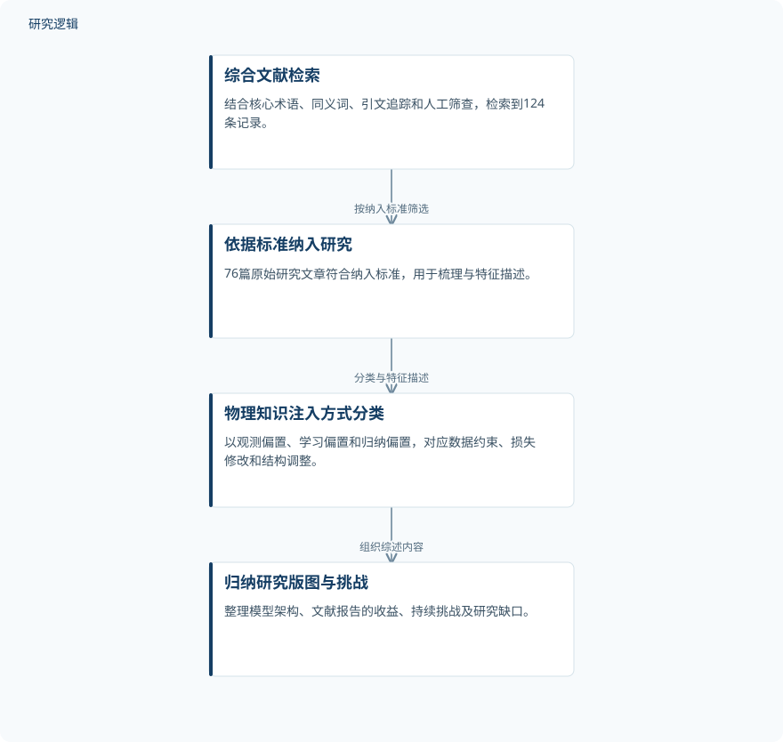

摘要解读
物理信息机器学习用于疲劳与断裂分析预测：范围综述
Physics-Informed Machine Learning for Fatigue and Fracture Analysis and Prediction: A Scoping Review
解读更新 2026-11-10 17:49 · 依据公开摘要整理，未核验全文细节
物理知识如何帮助机器学习预测疲劳寿命与裂纹演化，又在哪些条件下仍受限制？这篇范围综述梳理了物理信息机器学习的应用与架构，为读者理解其潜力、代价和适用边界提供了入口。
文章目录
疲劳与断裂预测：让数据学习受到物理约束
物理信息机器学习（PIML）尝试结合神经网络的数据驱动灵活性与物理定律的一致性。本文关注的任务包括疲劳寿命预测、裂纹生长与扩展、多轴疲劳、损伤力学，以及预测与健康管理、结构健康监测。
这是一篇范围综述，重点是描绘研究的覆盖范围、类型与特征，而不是提出并验证一个新的预测模型。其阅读价值在于帮助读者辨认：不同研究究竟把物理知识放在了学习过程的什么位置。
从文献检索到物理知识注入方式的分类
作者将领域核心术语与更广泛的同义词结合检索，并辅以前向、后向引文追踪，以及对发文较多刊物的人工筛查。综合策略检索到124条记录，其中76篇原始研究文章符合纳入标准，被用于梳理和特征描述。
综述采用观测偏置、学习偏置和归纳偏置分类，分别对应数据层面的约束、损失函数修改和模型结构调整。这套框架把关注点从模型名称转向物理知识如何进入学习流程，并据此整理相关研究。
依据摘要整理的文献梳理过程


仅概括摘要明确报告的检索、纳入与分类关系，是阅读辅助示意，不是论文原图。
下载 SVG图示关系说明
实线表示相邻阶段的信息流，虚线表示跨阶段联系或反馈。
综合文献检索 → 依据标准纳入研究：按纳入标准筛选；依据标准纳入研究 → 物理知识注入方式分类：分类与特征描述；物理知识注入方式分类 → 归纳研究版图与挑战：组织综述内容
架构不断扩展，收益与训练代价并存
摘要列出的架构从基于多层感知机的物理信息神经网络，延伸至序列注意力模型、物理信息Kolmogorov–Arnold网络、几何感知有限编码、图神经网络及概率贝叶斯形式，显示该领域并非只有单一网络路线。
被梳理的文献报告了若干收益：改善稀疏、含噪实验数据条件下的泛化，相较传统仿真获得计算收益，以及量化预测不确定性。但这些是纳入研究所报告的表现，不能理解为所有PIML模型均已获得相同效果。
综述同时归纳出持续存在的难点：训练成本高，对超参数和损失权重选择敏感，跨问题配置的迁移能力有限，以及深度模型的黑箱性质。物理知识的引入并未使这些问题自动消失。
摘要尚不足以判断收益的适用边界
仅凭摘要，无法判断各项研究的实验样本规模、材料与载荷覆盖范围，也无法核对比较基线、误差指标、计算成本口径及外部验证范围。因此，不能据此给出统一的精度提升或加速结论；这些信息需要进一步查阅全文，而非认定论文没有报告。
阅读启发：先追问物理约束，再判断可迁移性
阅读启发：面向疲劳可靠性与智能运维，可优先追问物理知识进入了数据、损失函数还是网络结构，以及所报告的收益是否依赖特定问题配置。作者将可泛化与自适应架构、多尺度多物理表述和标准化基准列为未来方向；这些是研究议程，不是已经实现的能力。
以上为本站阅读启发与建议，不是论文已验证的结论。